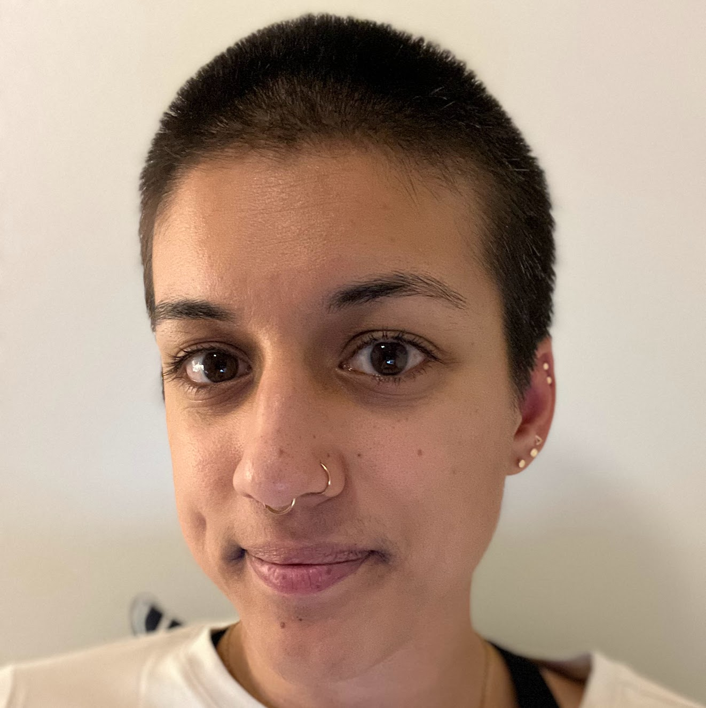

About
I am a second-year PhD student in the PLSE group at the University of Washington. Zach Tatlock is my advisor.
Prior to grad school, I was a software engineer. I spent one year at Google working on Android Maps and Cloud Storage Security & Privacy, then I worked at Code.org for three years, where I built block-based programming environments for K-12 students.
Publications
| OOPSLA 2023 |
Equality Saturation Theory Exploration à la Carte
, Brett Saiki, Cynthia Richey, Ryan Tjoa, Amy Zhu, Oliver Flatt, Max Willsey, Zachary Tatlock, Chandrakana Nandi paper | slides | talk | code |
Teaching
Teaching Assistantships
| Winter 2024 |
University of Washington CSE 331
Software Design & Implementation |
| Winter 2023 |
University of Washington CSE 505
Programming Languages |
| Spring 2017 |
Brown University CS 8
A First Byte of Computer Science |
| Fall 2016 |
Brown University CS 173*
Programming Languages |
| Spring 2016 |
Brown University CS 195Y
Logic for Systems |
| Fall 2015 |
Brown University CS 17*
Intro. Functional Programming |
| Spring 2014 |
Brown University CS 18
Intro. Object Oriented Programming |
| Fall 2014 |
Brown University CS 17
Intro. Functional Programming |
Guest Lectures
| April 2024 |
Applying Author Styles (Chapter 6)
University of Washington CSE 493 X (Web Browser Engineering) |
| April 2024 |
Compiler Optimizations with Datalog and Equality Saturation (slides)
Wellesley College CS 340 (Modeling for Computer Systems) |
| April 2024 |
Compiler Optimizations with Datalog and Equality Saturation (slides)
Brown University CS 171 (Logic For Systems) |
| November 2023 |
Software Best Practices in Practice (slides)
Brown University CS 32 (Intro. Software Engineering) |
| May 2023 |
SlideRule: A Domain-Specific Language for Rewrite Rule Inference Using Equality Saturation (slides)
Brown University CS 171 (Logic For Systems) |
| April 2022 |
Dependency Migration in Practice (slides)
Brown University CS 32 (Intro. Software Engineering) |
Service
| Spring 2024 |
PNW PLSE
Co-Chair |
|
CSE 492R: Undergraduate Research Seminar
Grad Student Panelist |
|
| Winter 2024 |
SPLASH OOPSLA 2024
Artifact Evaluation Committee |
| Spring 2023 |
PNW PLSE
Co-Chair |
Contact
Email: anjalip@cs.washington.edu
Github: ajpal